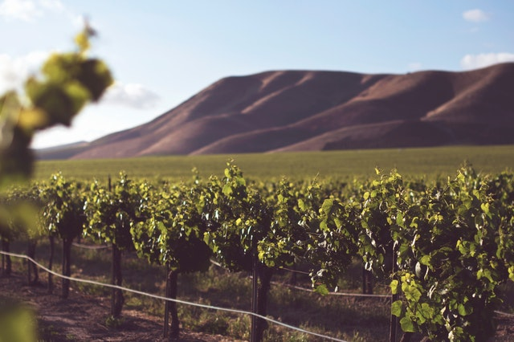

Welcome to Villa Negra
The Winery was founded in 1994 and to this day remains a family business. Our aim is to make the best possible wine we can, using the best available technology, while maintaining the traditions of our people. We also want to share everything we have accomplished with our visitors, local or foreign!
Any wine starts with the grapes and having a vineyard is required for any winery. That is why we have planted over 500 hectares (1230 acres) over the course of 10 years. All of our vineyards are located in the vicinity of the Geamana village, in the county of Anenii Noi, at a distance of approximately 10 kilometers from the winery.
We have planted different varietals over the years, but recently the focus has been on local varietals. The foundation of our wines is built on French varietals such as Cabernet Sauvignon, Merlot, Chardonnay, Sauvignon Blanc and Muscat. But we have also planted other varietals such as Riesling, Malbec, Pinot Noir and of course the two local varietals of Feteasca Alba and Feteasca Neagra.

We make a wide variety of wines ranging from dry reds, whites and roses to dessert Ice Wines and fortified wines. Our red wines are full bodied and aged in 225 liter oak barrels or on oak staves. We use mostly American, Hungarian and to a lesser extent French oak. Our white wines are usually in the fresh and aromatic style with the exception of some of our Chardonnays and Rieslings which are fermented or aged in oak barrels as well.